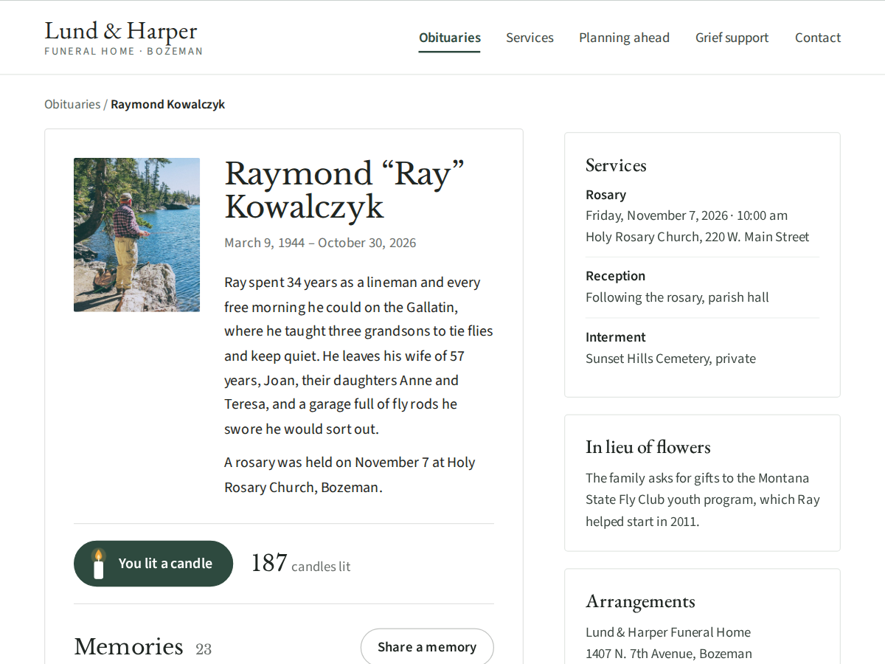

Memorial Wall
Candles and memories for the people you miss
- Light a candle button with a running count
- Visitors share memories; you approve each one
- One memorial per obituary page (Premium)
- Keepsake book PDF for the family (Premium)
- December remembrance wall (Premium)

What it does
A memorial for one person, on your own site: their photo, name and dates, a few words about them, a "Light a candle" button with a running count, and the memories friends and family leave.
Nothing a visitor writes goes live by itself. Each memory waits in your dashboard until you approve it, and you can hide or delete any of them later, for example when someone asks you to. A family running its own memorial page can switch approval off. Each visitor can light one candle a day, and the form blocks spam. Email addresses are optional and only you see them.
Funeral homes put the widget on each obituary page. A page whose address ends with the memorial's slug, such as /obituaries/eleanor-whitcombe, shows that memorial without any setting, so one dynamic obituary page covers everyone.
Premium adds a memorial for every person, all memories on show, CSV export and a keepsake book: a PDF with the photo, the dates, the candle count and every approved memory, ready to print for the family. Hospices and churches can open a remembrance wall for their December services, where visitors add the name of someone they miss and light a candle.
Headings use a classic serif or your site's font.
Price
Free
- One memorial with photo, dates and a few words
- Light a candle with a running count
- Visitor memories you approve, 50 on show
- Small credit link
Premium
$6/month, yearly $5/month (16% off)
- A memorial for every person, one per page
- All memories, CSV and a keepsake book (PDF)
- Remembrance walls for December services
- Remove the credit link